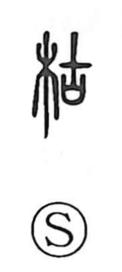

枯

Uncategorized
Kun: kareru, karasu | On: ko
to wither ・ to dry up ・ withered
Explanation
A phono-semantic graph: the left side 木 “tree, wood” gives the sense, while 古 supplies the on reading ko. In early writing, 古 shows a sacred shield set upon a covenant coffer that held petitions to the deities, a rite meant to preserve the efficacy of prayers over time; hence its meaning “old.” When age has fully taken its course, trees lose their vitality and wither, and waters, too, run dry—so this character came to mean “to wither, to dry up.” Many graphs built on 古 carry this nuance of life-force ebbing away; 故, for example, speaks of the deceased, a field marked in ancient forms by the death-signifier 歹. In this pattern, 枯 names the state in which the life of wood and plants has drained away.